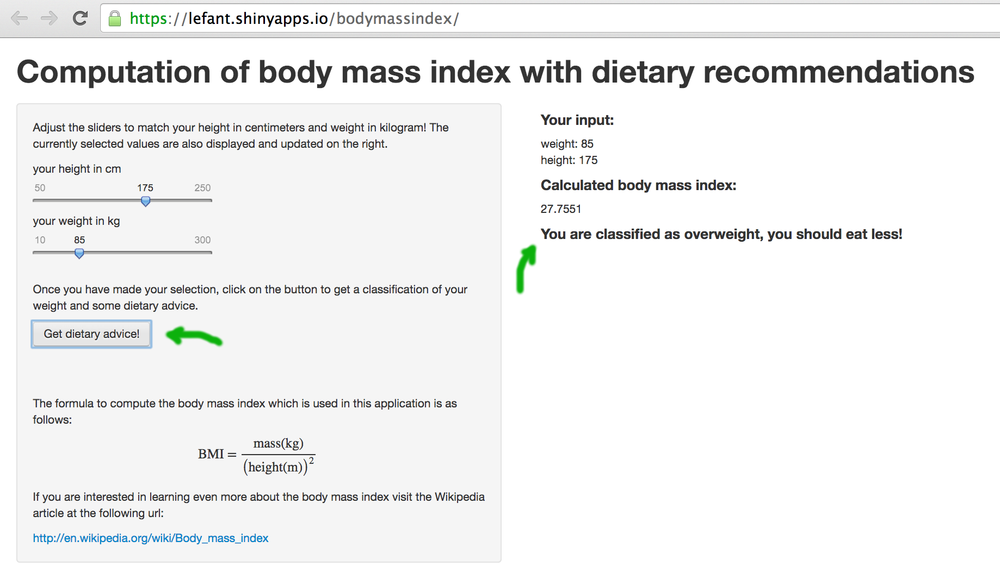

created by Fabian Linzberger / @lefant
a measure of relative weight based on an individual's mass and height.
- Wikipedia
The BMI is used in a wide variety of contexts as a simple method to assess how much an individual's body weight departs from what is normal or desirable for a person of his or her height.
Stastistical BMI data is readily available for comparison
library(reshape2)
library(ggplot2)
df <- read.csv("UnitedStatesofAmerica.csv")[c(40:43), c(1:6)]
colnames(df)[1] <- "year"
ggplot(data=melt(df, id = "year"), aes(x=year, y=value, fill=variable)) +
geom_bar(stat="identity", position=position_dodge()) +
xlab("Year") + ylab("Percentage of adults in the US") +
ggtitle("Distribution of BMI classes over time")

online demo: https://lefant.shinyapps.io/bodymassindex/